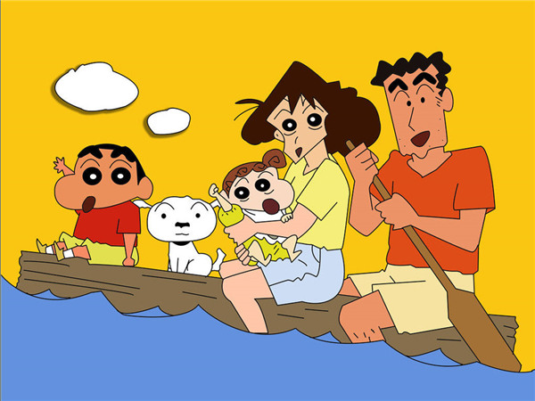
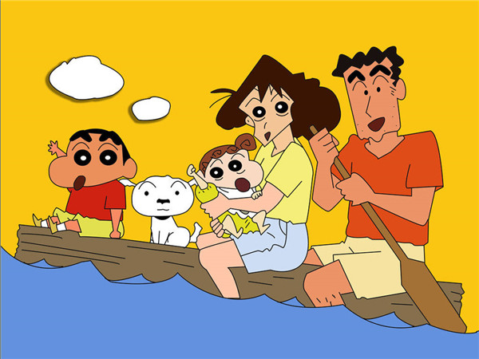

《蜡笔小新》是由日本漫画家臼井仪人创作的漫画。
1990年8月，在《weekly漫画action》上开始连载。1992年，根据漫画改编的同名动画在朝日电视台播出。2010年7月16日，臼井仪人遗作《蜡笔小新》第50卷出版。 在作者臼井仪人去世后，作品由"臼井仪人&UY工作室"沿袭原作风格继续创作。

创作背景
臼井仪人先生说之所以会创造出小新这个形象，是因为他在观察自己的孩子的时候，发现小孩子的想法往往非常独特， 以至于作者被小孩的世界所吸引。所有的小孩都有乖巧和调皮的两面性。 这种两面性对作者来讲是十分有趣的。反过来作者正是在自己的作品中反映了这一两面性。他同时承认“小新”有一部分是他自己的翻版。据他透露，蜡笔小新里有许多内容是他现实生活的写照，例如：小新爸爸造型与他本人有些相似；小新和他爸爸两道浓眉毛乃是因作者自己嫌弃自己的眉毛太稀疏
以至于作者被小孩的世界所吸引。所有的小孩都有乖巧和调皮的两面性。 这种两面性对作者来讲是十分有趣的。反过来作者正是在自己的作品中反映了这一两面性。他同时承认“小新”有一部分是他自己的翻版。据他透露，蜡笔小新里有许多内容是他现实生活的写照，例如：小新爸爸造型与他本人有些相似；小新和他爸爸两道浓眉毛乃是因作者自己嫌弃自己的眉毛太稀疏
以至于作者被小孩的世界所吸引。所有的小孩都有乖巧和调皮的两面性。 这种两面性对作者来讲是十分有趣的。反过来作者正是在自己的作品中反映了这一两面性。他同时承认“小新”有一部分是他自己的翻版。据他透露，蜡笔小新里有许多内容是他现实生活的写照，例如：小新爸爸造型与他本人有些相似；小新和他爸爸两道浓眉毛乃是因作者自己嫌弃自己的眉毛太稀疏 剧情简介
小新是一个年仅5岁，正在幼儿园上学的小男孩。他内心早熟，喜欢欣赏并向美女搭讪。最初小新与父亲广志和母亲美伢组成一个三人家族。随后又添加了流浪狗小白，日子频繁琐碎却不乏温馨感动。随着故事展开，又加入了新的成员妹妹野原向日葵

